Next: Effect of Temperature Up: Results and Discussion Previous: Glycerol to Oxygenates (Step
In the above section, the rate constant and reaction order of step R1 were obtained by feeding glycerol in a differential reactor,
controlling its conversion in the range 5-10%.
To study the rate constants and reaction orders of steps R2-R4,
still under differential operating conditions,
oxygenates were used as feed.
The oxygenates, based on the compositions reported in our prior work [#!Xiao2016!#],
were represented by a mixture of acetaldehyde, propanal, acrolein and acetol.
Because acrolein was found to be the primary component (60-93%), pure acrolein was also tested as feed.
As shown in Figure 4, both pure acrolein and oxygenates curves show good second-order fits,
while formation rates of gases and aromatics, corresponding to 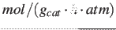 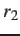 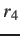
The conversion of acrolein to gases likely includes hydrogenation of acrolein to propanol, followed by propanol dehydration and other C-C cleavage reactions. [#!Marinelli1995!#,#!Mohr2000!#,#!Volckmar2009!#]. Both first and second orders have been reported for acrolein hydrogenation[#!Jesus1999!#,#!Wei2013!#]. Since reaction rates starting with representative oxygenates and pure acrolein as feed, as shown in Figure 4, are close, only pure acrolein was used for further kinetic measurements, discussion and analysis.
Both gases and aromatics were detected when oxygenate conversions were lower than 10%.
Since no glycerol was fed ( 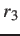 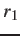 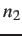
To determine reaction order of step R4 ( 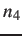 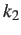 ) and all rate constants (
) and all rate constants (
In Figure 5(a),
the aromatics partial pressure is plotted versus the partial pressure of gases.
Since a linear relation fits well, 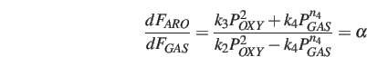 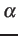
Taking logarithm of both sides yields Eq. (15).
The plot of Eq. (15) is shown in Figure 5(b), where the fitted slope is 0.968, thus step R4 is found to be first-order.
Additional tests for reaction orders of steps R2 and R3 were carried out, such as the following data sets: =1, =1; =1, =2; =2, =1;=2, =3; and =3, =2, etc. These sets, however, always provided worse fits. Thus it is confirmed that the assumption of =2, =2 is reasonable.
To determine , 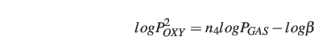 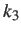 C, shown in Table 2.
C, shown in Table 2.
Yang Xiao 2017-12-05